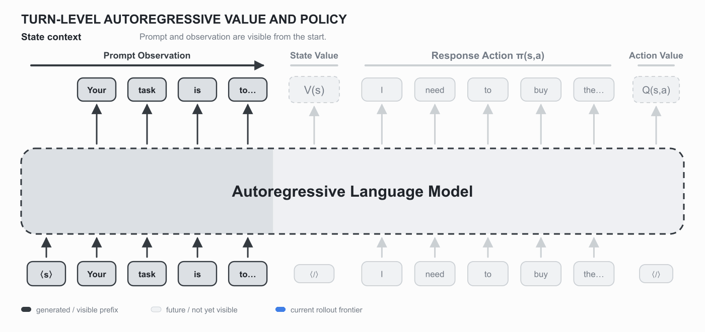
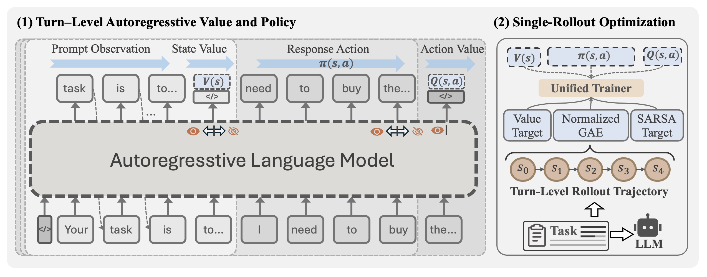
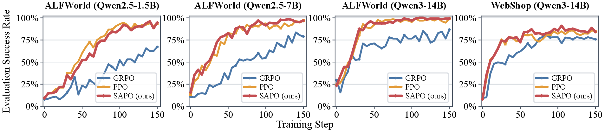
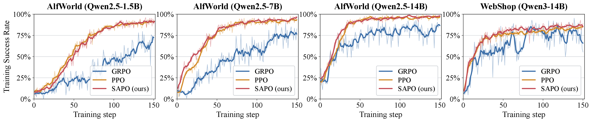
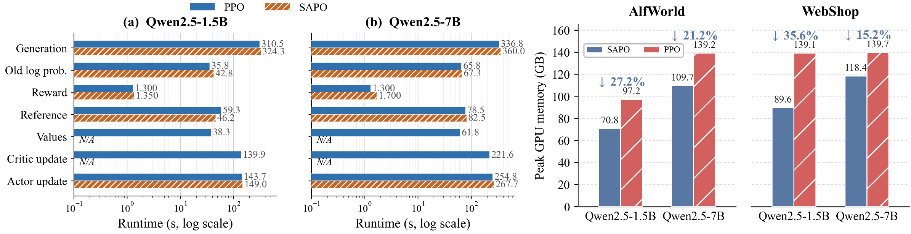

Roll out once
Sample one interactive trajectory for each task with the current policy.
Agentic RLSingle rolloutShared policy & value
for Agentic Reinforcement Learning
A compute- and memory-efficient PPO-style framework that learns policy, state value, and action value inside a single causal language model—without a separate critic or same-task rollout groups.
Xiamen University · Nanyang Technological University
* Equal contribution † Corresponding author

SAPO reads a state value before the response, generates the response action, then reads its action value after the response. These causal-boundary estimates supply turn-level credit assignment while every objective updates the same transformer in one backward pass.
01 · Method
SAPO preserves PPO’s explicit value learning while removing the policy-scale critic. An auxiliary on-policy SARSA objective helps the shared representation learn action values.
Sample one interactive trajectory for each task with the current policy.
Estimate V(s) before an action and Q(s,a) after it using a shared dual-logit readout.
Compute GAE advantages, λ-return value targets, and on-policy SARSA targets.
Optimize clipped policy, state-value, and action-value losses in a single shared-model update.

ℒSAPO(θ) = ℒpolicy + cVℒV + cQℒQ − cHℋ(πθ)
02 · Performance
Across ALFWorld and WebShop, SAPO follows stable PPO-like learning dynamics and consistently outperforms GRPO under matched optimization and sampling settings.
+21.8 points over GRPO with the same backbone.
88.4 WebShop score and 83.6% success.
+14.9 points over GRPO with lower variance.
SAPO closely tracks PPO and converges faster than GRPO.


03 · Efficiency
By learning values inside the policy model, SAPO removes separate critic inference, optimizer states, and critic updates—cutting both memory and wall-clock cost.
Consistent reductions across both environments and 1.5B/7B model scales.
Measured on ALFWorld under fully matched training configurations.
No same-task group sampling is required to compute advantages.

In one sentence
04 · Citation
The implementation, training recipes, and environment integrations are available on GitHub.
@misc{liang2026sapo,
title = {SAPO: Single-Rollout Autoregressive Policy
Optimization for Agentic Reinforcement Learning},
author = {Liang, Dayang and Feng, Lang and An, Bo
and Liu, Yunlong},
year = {2026},
eprint = {2608.19842},
archivePrefix = {arXiv}
}